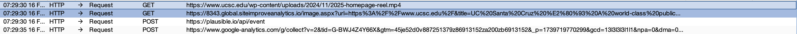
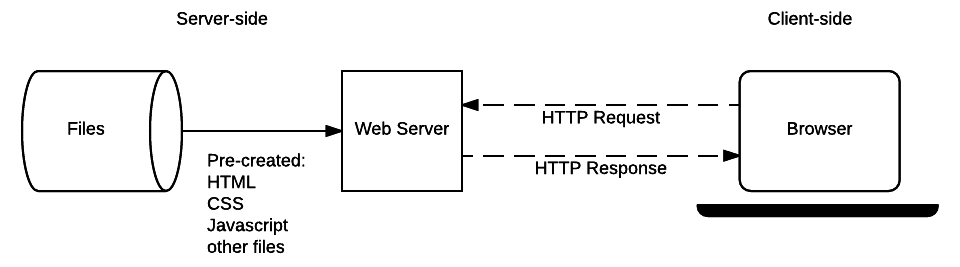

After learning about digital signatures, certificates, footprints, cookies, and session IDs, I decided to get some hands-on experience. I fired up Burp Suite, searched for my university's website, and received some very interesting results. Here's what happened when I made a simple request to http://ucsc.edu:

Looking at the results, we can see two GET requests and two POST requests. When I visit a webpage, I expect to receive the requested content—HTML, images, and stylesheets. But here, there are hidden requests. First, let's run through a basic overview of how websites function.
How Do Websites Function?
Everything you see on a webpage is just a file. When you visit a website, your browser requests the HTML, CSS, and JavaScript files. These files are then processed locally on your machine to display the webpage.

The Problem: Hidden Requests and Unwanted Tracking
So why is this a big deal? Because your machine is sending data to external services without your knowledge or consent.
Looking at the Burp Suite example, let's examine those extra requests:
- GET request to
siteimproveanalytics.io→ A tracking pixel that logs your visit. - POST request to
plausible.io→ Sends analytics data about your activity. - POST request to
google-analytics.com→ Another tracker collecting user behavior data.
All three of these requests are to analytics services—not something I explicitly agreed to interact with.
How Is Your Data Being Collected?
Websites embed tracking scripts that execute automatically, collecting and sending data without any visible sign.
Many websites use JavaScript to track what you click, keystrokes, and how you traverse the website. This data is silently sent to analytics companies in the background—without you ever knowing. And what's worse is that this data is being sent from your machine to the analytic service.California vs Europe
Now I want you to look at the difference between how Europe handles data vs California.
In California as stated by the CCPA, companies who meet the requirements (must hold 100k user data, etc.) need to inform the user that their data is being collected and to give them an option to opt-out.
In Europe, under the GDPR, companies cannot collect data from users by default. The user has to opt in for the company to start collecting data.
California seems to prioritize and incentivize data collection, while Europe's approach is to protect the data of users.
Conclusion
It's concerning how normalized this behavior has become. Now ucsc.edu is rather conservative in its data collection efforts. I perform bug bounties or attempt to at least and many times when walking through the website ill see many more then ucsc.edu. As an example i'd typically see around 10ish analytics requests.
What shocks me the most is that you as a user are unwillingly sending over data to analytic services from "your own machine" by default ( This happens the moment you boot up your machine. ). Now that's not to say all data collection is bad, in fact its made a lot of things easier and can be great. I just believe that California and other states or countries should adopt similar standards to Europe putting user privacy first.